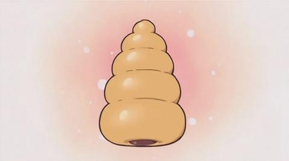

Description
Lucky Star was probably one of the most popular shows of the mid to late 2000′s. In fact, I have a friend who makes certain to watch it at least once a year. However, since its heyday, it’s seemed to wane in popularity. In spite of this, some things (like this chocolate cornet, which is discussed at length in the first episode) stick with nerd culture.
So, which side do you eat your cornet from?
Chocolate Cornets - Lucky Star
Ingredients
- Horn/Cornet molds, or tinfoil or wax paper to make your own
- 1 ½ cups all-purpose flour
- 1 ½ cups half and half
- 1 tbsp. milk powder
- some water, slightly warmed (only if needed)
- 1 egg
- 1 ½ tbsp. sugar
- 1 tbsp. oil
- 2 tbsp. melted butter
- 1 tsp. instant yeast
- ½ tsp. salt
- 8 ounces semisweet chocolate chips
- 1 tbsp. unsalted butter, at room temperature
Instructions
- Sift the flour, then add milk powder, sugar, yeast and salt.
- Beat the egg slightly.
- Add the oil, butter and 2 tbsp. of the beaten egg into the flour mixture, and mix together.
- Take ½ cup of the half and half and microwave it for 20 seconds (or just heat it on the stove until warm) and add it to the dough.
- Start kneading together for around 8-10 minutes, until the dough is soft and there are no more lumps of flour remaining. If your dough mixture seems a bit dry, or you’re having a difficult time getting the flour mixed in, go ahead and add small amounts of warm water until you can mix it well.
- Touch a bit of oil with your fingertips and apply all over the ball of dough. Cover with a dish towel and let it rest for an hour until it doubles in size. Keep in mind that the dough needs warmth in order to rise. I find it helpful to let it rise on the counter near my stove top with one of the stove burners on, but you’ll want to be very careful doing this way.
- Preheat your oven to 350 F.
- While you are waiting for your dough to rise and your oven to heat, make your cone molds if you’re making them out of tinfoil or wax paper.
- Cut the dough into 5 or 7 pieces, depending on the size you want your cones. Make sure they are all about the same size. Shape them into balls, then cover and set them aside to rest for 15 minutes.
- Take a small amount of oil, and grease the cone molds (or just use a spray like Pam).
- Roll each piece of dough into a rope. Roll the dough ropes around the greased cone molds. The dough may be a little bit difficult to maneuver; if so, just let the rope sit of a few more minutes before wrapping around. Don’t worry if the dough on the cones seems a little small, they will puff up when baking.
- Brush the tops of the cornets with the remaining beaten egg. Bake for 18 minutes or until golden brown. Place onto a wire rack and allow them to cool for a couple of minutes before removing the cone molds.
- Place chocolate in a medium heatproof bowl.
- Place the remaining half and half in a small saucepan over medium heat and bring to a simmer.
- Pour warm half and half over chocolate and stir until chocolate has melted.
- Add butter to chocolate mixture, and stir until smooth. Let cool slightly before filling.
- Fill the cones with chocolate let them cool. I put mine in the fridge (maneuvering some things to keep them standing up) for about 10 minutes. If you plan on taking it for a lunch, place a small square of wax paper on top of the chocolate before putting the cornet into the fridge, so that the chocolate won’t get messy in your lunchbox.
- Figure out which side to start eating it from, and enjoy!